Tu hijo merece un lugar donde
llegue feliz y salga preparado.
En Coyoacán, una formación bilingüe, tecnológica y humana, con evidencia real de aprendizaje y acompañamiento cercano en cada etapa.
Resuelve tus dudas al instante, con tranquilidad
Habla por voz con nuestro asesor educativo sobre admisiones, costos y nuestro modelo — al momento. Está conectado con la información del colegio para escucharte y darte respuestas claras. Porque tu tranquilidad importa.
Habla con nuestro asesor"Cuando mi hijo entró a Banting no hablaba inglés. En diciembre presentó su primer proyecto de ciencias completo en inglés frente a 30 personas. Me solté llorando. Eso no tiene precio."
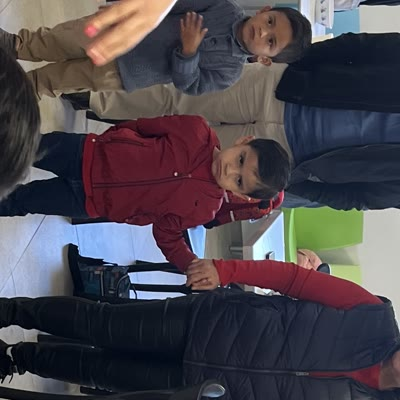
Primaria — Encuesta de Satisfacción 2025
"Mi hija llega feliz todos los días. Como papá, lo que más valoro es saber que está segura y que las instalaciones están bien cuidadas. Esa tranquilidad no tiene precio."
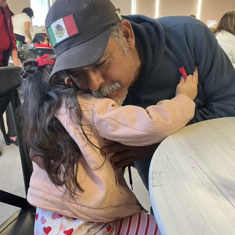
Primaria — Encuesta de Satisfacción 2025
"No solo es lo académico — le dan importancia al deporte, al arte, a los valores. Mi hijo está creciendo como persona completa, no solo como estudiante."
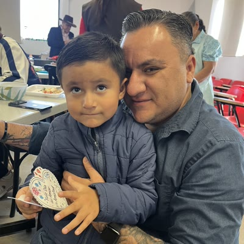
Secundaria — Encuesta de Satisfacción 2025
Tradición y vanguardia para formar
estudiantes integrales
Nuestro Modelo Educativo Banting (MEB) pone al estudiante en el centro del aprendizaje y desarrolla competencias que le permiten aprender, pensar y actuar correctamente en un mundo cambiante. Enseñamos habilidades para la vida con fundamento en valores, compromiso con su entorno y vehículos tecnológicos que llevan sus ideas a la realidad.
STEAM Aplicado
Laboratorios de robótica, programación real y proyectos interdisciplinarios desde Preescolar hasta Secundaria.
Innovación y STEAMFeria de Emprendimiento
Cada alumno crea, presenta y defiende un proyecto real. Autonomía, liderazgo y educación financiera tangible.
Carácter emprendedorBilingüismo Certificado
Certificaciones Oxford y Cambridge alineadas al Marco Común Europeo. Inglés medible, progresivo y real.
Bilingüe y biculturalAprender a hacer bien las cosas
Hábitos, habilidades y carácter desde la infancia. Porque lo que se forma bien en la escuela acompaña para toda la vida.
Habilidades para la vidaPrograma Antibullying
Prevención activa, detección temprana y acompañamiento socioemocional con el programa Insight. Cero tolerancia, intervención real.
Bienestar socioemocionalUna ruta de inglés medible y acompañada
En Banting, el inglés no es solo una materia: es una ruta medible y acompañada. Preparamos a los alumnos para certificaciones internacionales en 6º de Primaria y 3º de Secundaria.
Lo que tu hijo logrará en cada etapa
Formamos alumnos con herramientas académicas, tecnológicas, humanas y emocionales para crecer con seguridad dentro y fuera del aula.
Preescolar
Al terminar Preescolar, tu hijo podrá expresarse con confianza, comenzar su camino en el inglés, convivir sanamente con los demás y reconocer sus emociones mientras aprende jugando, explorando y creando.
Primaria
Al terminar Primaria, tu hijo podrá certificarse en inglés, programar un robot, liderar proyectos de emprendimiento y enfrentar retos cotidianos con inteligencia emocional, empatía y seguridad en sí mismo.
Secundaria
Al terminar Secundaria, tu hijo podrá consolidar su inglés, desarrollar proyectos tecnológicos, liderar ideas con enfoque emprendedor y enfrentar los retos de la adolescencia con criterio, inteligencia emocional y seguridad personal.
Servicios que te devuelven tiempo
Diseñados para la agenda de familias ejecutivas modernas.
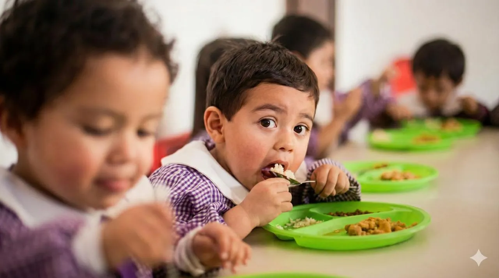
Servicio de Comedor
Para el ciclo 2026-2027 contará con asesoramiento de nutriólogos certificados.
Horario Extendido
Hasta las 19:00 hrs con supervisión académica y recreativa.
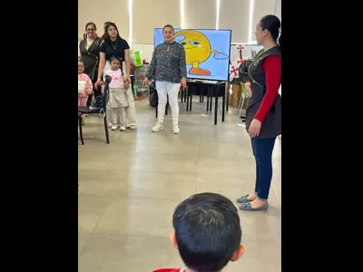
Clubes In-house
Robótica, Arte, Taekwondo.
Transporte
Rutas seguras monitoreadas.
Talleres Extracurriculares
Actividades por la tarde para mover el cuerpo o mover la mente. Sin costo adicional.
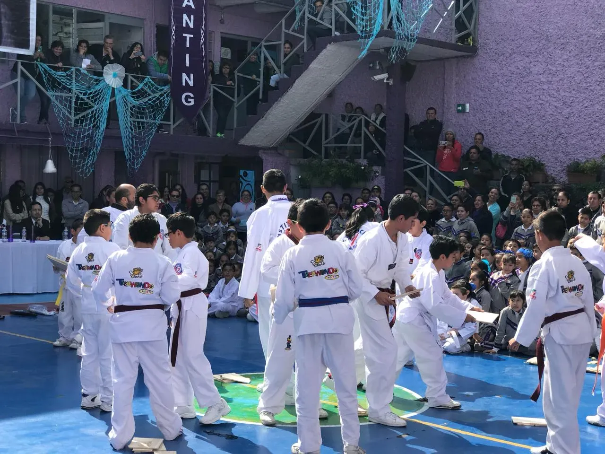
Club de Tareas
Espacio supervisado para que tus hijos completen sus tareas con apoyo académico.
Colegiatura mensual desde
$3,316/mes
Tu colegiatura incluye:
- check_circle Material digital y plataforma Google Workspace
- check_circle Seguro escolar contra accidentes
- check_circle Talleres extracurriculares sin costo extra
- check_circle Certificaciones de inglés Oxford & Cambridge
Seguridad Banting
Tu hijo solo se entrega a personas
que TÚ autorizaste. Punto.
Sabemos exactamente quién entra y quién sale. Cada día, sin excepciones.
Solo entra quien tú autorices
Control biométrico Kigo + código QR temporal para visitantes + CCTV en cada acceso, las 24 horas.
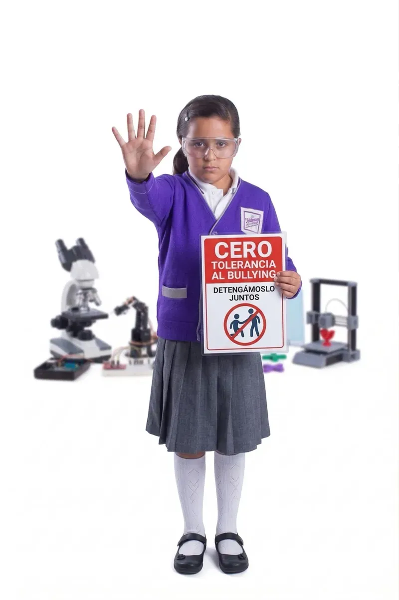
Cero tolerancia al bullying
Programa Psicopedagogía Preventiva con intervención temprana, seguimiento individual y soporte emocional continuo.
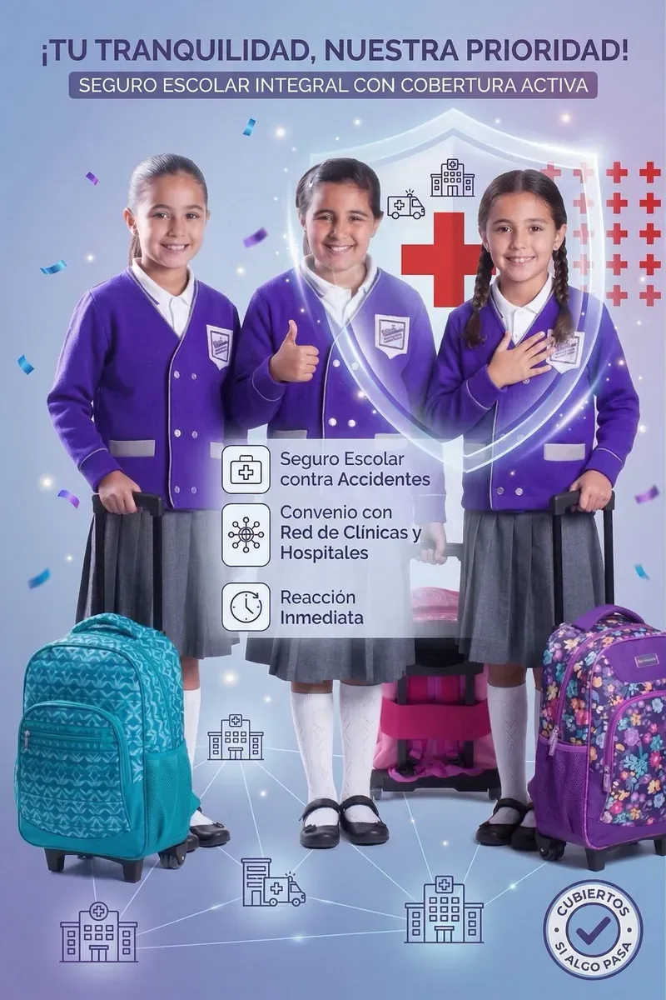
Cubiertos si algo pasa
Seguro escolar contra accidentes + convenio con red de clínicas y hospitales. Reacción inmediata.
 GOOGLE REFERENCE SCHOOL 2026
GOOGLE REFERENCE SCHOOL 2026 Tecnología con propósito,
integrada al día a día
En Banting, la tecnología forma parte de la experiencia escolar cotidiana. Está en las aulas, en los proyectos, en el trabajo colaborativo y en la manera en que tu hijo investiga, crea, presenta y aprende con mayor autonomía.
- check_circleGoogle Workspace for Education dentro del trabajo escolar
- check_circleChromebook program y recursos digitales durante la jornada
- check_circleSTEAM, robótica y proyectos prácticos con aplicación real
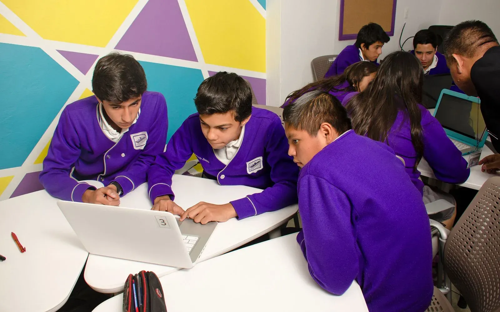
Un Día en Banting
No te contamos lo que enseñamos. Te mostramos lo que tu hijo vive cada día.
9:00
Bienvenida
Círculo de la mañana, asamblea emocional y rutina de saludo bilingüe.
9:30
Lectoescritura bilingüe
Fonética en español e inglés con método lúdico y trabajo en estaciones.
10:45
STEAM & Exploración
Proyectos sensoriales, arte, música y primeros experimentos científicos.
12:00
Comida & recreo
Lunch supervisado y juego libre en áreas seguras.
13:00
Cierre socioemocional
Programa Insight: reflexión del día, regulación emocional y despedida.
Siempre está pasando algo en Banting
Eventos, experiencias y momentos que hacen de la vida escolar algo que se recuerda — no solo algo que se cursa.
Próximamente
PRI. Ceremonia — Día Nacional de la Paz
🕊️ Ceremonia cívica "Día Nacional de la Paz", a cargo de 4°A — lunes 28 de septiembre. 💜
PRI. Semana de Evaluaciones (1°–6°)
🧠 Semana de Evaluaciones de Primaria — del 28 de septiembre al 2 de octubre. Los exámenes son por día y materia: 📘 lu
BANTING. Pago 3 de 3 — Student Success Package
🎓 Tercera y última parcialidad del Student Success Package (sin intereses). Montos con descuento: Kínder $2,248 · Prim
Lo más reciente
Así se vivió nuestra Feria de Emprendimiento
Proyectos reales, alumnos presentando sus ideas y una comunidad que acompaña el aprendizaje más allá del salón.
Ver vida escolar arrow_forwardLa tribu de familias en Coyoacán
4.9/5 basado en encuestas de satisfacción anual.
Madre de familia
verifiedPrimaria — Encuesta de Satisfacción 2025
"Cuando mi hijo entró a Banting no hablaba inglés. En diciembre presentó su primer proyecto de ciencias completo en inglés frente a 30 personas. Me solté llorando. Eso no tiene precio."
Padre de familia
verifiedPrimaria — Encuesta de Satisfacción 2025
"Mi hija llega feliz todos los días. Como papá, lo que más valoro es saber que está segura y que las instalaciones están bien cuidadas. Esa tranquilidad no tiene precio."
Madre de familia
verifiedSecundaria — Encuesta de Satisfacción 2025
"No solo es lo académico — le dan importancia al deporte, al arte, a los valores. Mi hijo está creciendo como persona completa, no solo como estudiante."
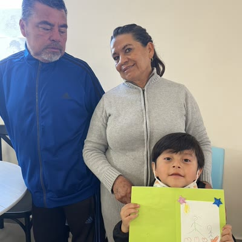
Madre de familia
verifiedPreescolar — Encuesta de Satisfacción 2025
"La integración de tecnología en el aprendizaje me sorprendió. Y cuando tengo dudas, siempre me siento escuchada. Es un colegio que realmente te atiende."
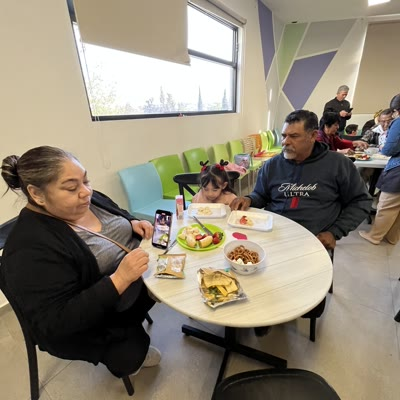
Padre de familia
verifiedPrimaria — Encuesta de Satisfacción 2025
"Buscábamos calidad sin que nos costara una fortuna. En Banting encontramos formación integral, instalaciones seguras y un precio accesible. La mejor decisión que tomamos."
Madre de familia
verifiedPrimaria — Encuesta de Satisfacción 2025
"El colegio promueve valores y habilidades socioemocionales de verdad. Mi hija ha desarrollado empatía y seguridad en sí misma que no tenía antes. Se nota el trabajo diario."
Padre de familia
verifiedSecundaria — Encuesta de Satisfacción 2025
"Los horarios se adaptan a nuestra dinámica familiar y siempre estamos bien informados. Cuando tenemos dudas, nos atienden rápido. Se siente que les importamos."
¿Listo para asegurar su futuro?
Cupo limitado para el ciclo 2026-2027